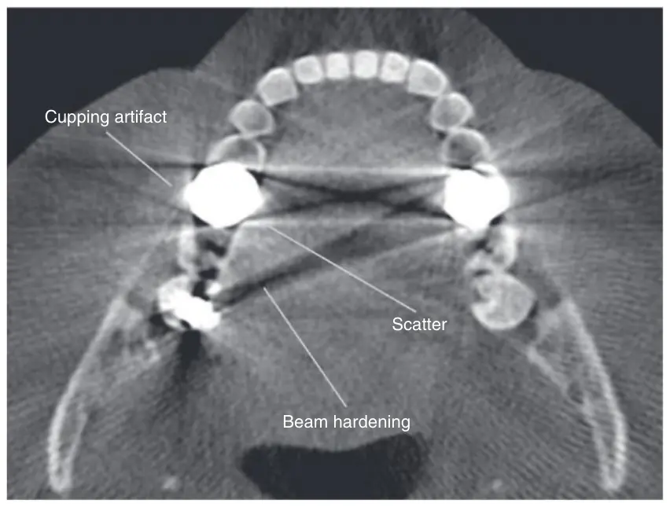
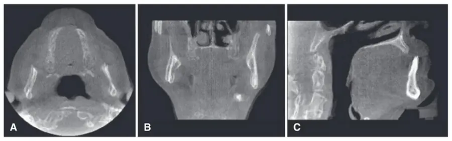

نسخه استخراجشده؛ ترجمه یا تأیید علمی انجام نشده است. وضعیت: captured
MDCT و CBCT را میتوان در هر چهار گام فرایند اکتساب مقایسه کرد:

۱) تولید پرتو و هندسهی پروجکشن — MDCT به «ژنراتورهای پرقدرت با انرژی ۱۲۰ تا ۱۴۰ kVp» تکیه دارد و «تنها برای مدت محدودی، تقریباً ۳۰ تا ۶۰ ثانیه، در توان بیشینه» کار میکند. نوآوریهای تیوب — محفظهی خلأ چرخان (تیوب استراتون)، لکهی کانونی پرنده، اندازههای متغیر لکهی کانونی، و اتلاف گرمای بهتر — «اکسپوزهای طولانیتر را ممکن کردهاند».
و در برابرش: «ژنراتورهای CBCT بهمراتب سادهترند، در بسیاری موارد همان ژنراتور دستگاه پانورامیک، با لکهی کانونی ثابت که در kVp پایینتر و mA بهشدت کاهشیافته کار میکند.» و حرکت اصلی MDCT «یک حرکت مارپیچی یا حلزونی پیچیده» است و «همیشه بیمار را در وضعیت خوابیده اسکن میکند».
و پیامد اقتصادیاش: «دستگاههای MDCT در نتیجه ردپای فیزیکی بزرگتری دارند و ۱۰ تا ۲۰ برابر گرانتر از CBCT هستند. هر دو ویژگی، CBCT را برای تصویربرداری درونمطبی مناسبتر میکند.» ولی در کیفیت، کفه به سوی MDCT است: «تصاویر MDCT با کنتراست بهتر، نویز کمتر و آرتیفکت کمتر تولید میشوند — ولی با دوز بالاتر.»
۲) آشکارسازی پرتو — «چیدمان و ساختار آشکارسازها در MDCT پیچیدهتر از CBCT است، با کولیماسیون بیشتر و تناظر هندسی بیشتر میان پرتو و آشکارساز. کارایی و حساسیت آشکارسازهای MDCT هم بالاتر است، که به تصویربرداری بهینهی کنتراست بافت نرم کمک میکند.»
و محدودیتهای پنل تخت CBCT سهتاست: «خطی نبودن پاسخ به طیف پرتو، نبود یکنواختی پاسخ در سراسر سطح آشکارساز، و پیکسلهای خراب.» و پیامدش: «تصویربرداری CBCT با تفکیک بالا اغلب از اکسپوزهای بیشتری استفاده میکند تا نسبت سیگنال به نویز معقولی به دست آید.»
۳) بازسازی تصویر — هر دو از FBP استفاده میکنند، ولی «فرایند در اسکنرهای مارپیچی اندکی فرق دارد»: یک گام پیشپردازش افزوده — درونیابی z — لازم است «تا ناسازگاریهای موجود در مجموعهداده بهدلیل حرکت مارپیچی پیوسته تصحیح شود و تصاویر مسطح در هر صفحهی دلخواه ساخته گردد».
و تفاوت کلیدی در کرنل: «در حالی که عملیات پسپردازش مانند کنتراست، روشنایی و تقویت لبه میتواند پس از بازسازی به دادهی CBCT اعمال شود، کرنلهای گوناگون میتوانند به دادهی MDCT اعمال شوند تا محتوای فرکانسی دادهی پروجکشن را پیش از FBP تغییر دهند.» و بهایش: «این به توان محاسباتی چشمگیر ایستگاه کاری نیاز دارد، نه رایانههای شخصی که معمولاً برای CBCT به کار میروند.»
۴) نمایش — هر دو روی مانیتور و با نرمافزار، و داده در قالب DICOM. یکی از عناصر فراداده «دستورالعملهای کالیبراسیون مانیتور» است که نمایش یکدست تصاویر را تضمین میکند و تابع نمایش مقیاس خاکستری (GSDF) نامیده میشود — «بهویژه برای تصاویر MDCT که تفکیک کنتراستی بالایی دارند مهم است».
و یک شکاف استانداردی که باید بدانی: سامانههای نمایش اولیه (درجهی پزشکی، سازگار با DICOM) برای تفسیر تصاویر MDCT به کار میروند و «باید معیارهای عملکردی سختگیرانهی ACR را برآورده کنند». ولی: «هرچند در دست بررسی است، در حال حاضر چنین استانداردهایی برای نمایش CBCT در دندانپزشکی وجود ندارد. بیشتر سامانههای CBCT از سامانههای نمایش ثانویه (درجهی مصرفی) استفاده میکنند.»
جدول مقایسهی پارامترها — این را حفظ کن:

| پارامتر | MDCT | CBCT |
|---|---|---|
| ردپای دستگاه | بزرگ | کوچک |
| زمان اکتساب | کمتر از ۱ ثانیه | معمولاً ۱۵ تا ۲۰ ثانیه |
| تفکیک فضایی | ناکافی برای ارزیابی دندانی و پریودنتال | تفکیک بالاتر ساختارهای دندانی و پریودنتال |
| نویز تصویر | کمتر | زیاد |
| تفکیک کنتراستی بافت نرم | عالی | ضعیف |
| دوز پرتو | استاندارد ۰٫۶۵ mSv، کمدوز ۰٫۱۸ mSv | FOV محدود ۰٫۰۵، ماگزیلوفاسیال ۰٫۱، کرانیوفاسیال ۰٫۱۲ تا ۰٫۱۵ mSv |
و زمان اسکن CBCT جزئیات بیشتری دارد: معمول ۱۵ تا ۲۰ ثانیه، پروتکلهای «اسکن سریع» تا ۵ ثانیه ولی «کیفیت تصویر بهشدت کاهش مییابد و ممکن است برای برخی وظایف تشخیصی کافی نباشد»، و پروتکلهای «تفکیک بالا» تا ۴۰ ثانیه، که «احتمال آرتیفکت حرکتی را افزایش میدهد».
و تفکیک فضایی — اعداد دقیق: هر دو میتوانند تفکیک زیرمیلیمتری بدهند. در MDCT «پهنای اسمی آشکارساز به ۰٫۵ میلیمتر نزدیک میشود». در CBCT «تفکیک اسمی وکسل معمولاً ۰٫۴ میلیمتر برای میدانهای دید بزرگتر» است؛ و برخی دستگاهها تفکیک بالا (۰٫۰۷۶ تا ۰٫۱۲۵ میلیمتر) میدهند که «برای وظایفی که تشخیص جزئیات ظریف میخواهند لازم است» — مانند فضای لیگامان پریودنتال، مورفولوژی کانال ریشه، تحلیل ریشه، انکیلوز، یا شکستگی.
و چه چیزی تفکیک را تعیین میکند؟ عمدتاً — ولی نه بهطور انحصاری — ویژگیهای فیزیکی دکسل: ابعاد اسمی و ضریب پرشدگی («کسری از سطح دکسل که توان ثبت نور دارد»). و عوامل دیگر: هندسهی پروجکشن، پراکندگی، حرکت آشکارساز و بیمار، اندازهی لکهی کانونی، تنظیمات اکتساب (شمار تصاویر پایه، کمان کامل در برابر جزئی)، و الگوریتمهای بازسازی.
و چرا پراکندگی در CBCT چنین مسئلهساز است؟ «هندسهی پرتو مخروطی حجم بافتی بزرگتری را تابش میدهد و پرتو پراکندهی بیشتری از برهمکنشهای کامپتون میدهد. بیشتر این پرتو پراکنده همهجهته تولید و توسط پیکسلهای آشکارساز ثبت میشود.» نتیجه: «شمار فوتونهای آشکارشده در هر پیکسل تضعیف واقعی جسم در مسیر مشخص پرتو را بازتاب نمیدهد.» و مقدارش «عموماً متناسب با جرم کل بافت درون پرتو اولیه» است — «با ضخامت جسم و اندازهی میدان افزایش مییابد». و در پایان یک جملهی تکاندهنده: «سهم این پرتو پراکنده در ساخت تصویر CBCT میتواند بیشتر از سهم پرتو اولیه باشد.»
و حالا اصل انتخاب مودالیته — ساده و کارآمد: «انتخاب MDCT در برابر CBCT عمدتاً بر پایهی هدف تشخیصی است. بسیاری از این اهداف با هر دو قابل دستیابیاند، ولی انتخاب باید بر پایهی نیاز به تفکیک کنتراستی برتر (MDCT) یا تفکیک فضایی (CBCT) باشد.»
و ترجمهی بالینیاش در دو جمله: «برای بیشتر پاتولوژیهای داخلاستخوانی، CBCT کافی است. MDCT ارزیابی بافت نرم بهتری میدهد. پس وقتی درگیری بافت نرم آشکار یا مشکوک است، MDCT مودالیتهی ترجیحی است.» و مادهی حاجب داخل وریدی — که «محدود به MDCT» است — «حساسیت کشف شمار زیادی از شرایط بافت نرم را با تقویت افزایش میدهد، شامل التهاب، بدخیمی، و درگیری لنفنود».
و اندیکاسیونهای نسبی — الگویی که باید ببینی:
و قاعدهای که پشت همهی این اندیکاسیونهاست: «کوچکترین FOV را به کار ببر که آناتومی مورد نظر را در بر بگیرد.»